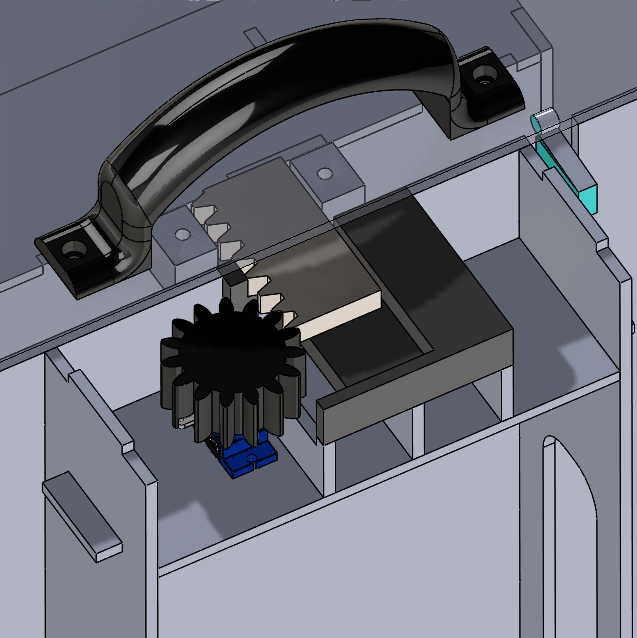
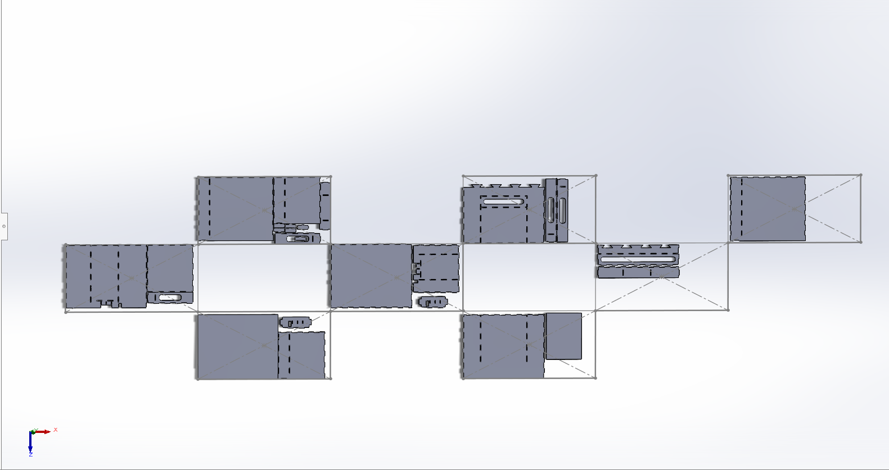
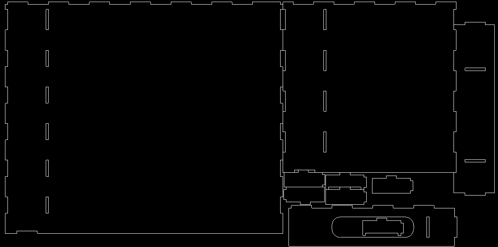

Tech Art Project – Puzzle of Secrets
As part of the Tech Art course, we were tasked with creating an interactive art piece, which made use of some sort of
technology, hence Tech Art. Our art installation for this exhibition focused on the various layers of a person and the similarities
between people and puzzle boxes. As you get you know a person, you learn more and more of their secrets, just as the more you
solve a puzzle box, the more secrets you find. Our installion allow for users to write and share valuable advice inside the first
box and then their secrets inside the inside box. These boxes where both locked until a puzzle was solved. The first comprised of
a simple riddle, while the second required some decryption of morse and binary codes.
I mainly contributed towards designing the laser cut box, the 3D printed parts, writing the code and building the
electronics. My teammates focused more on building the pedastal and the decoration of the installation. The installing adding
integration was done as a team. The design work was completed in SolidWorks, while the code and electronics was done using an
Arduino. The 3D print, laser cut and code files can be viewed on GitHub.

Lock Mechanism

Laser Cut Puzzle Box



Code & Electronics